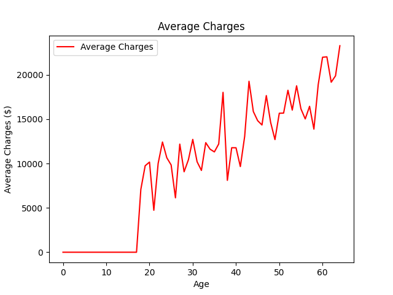
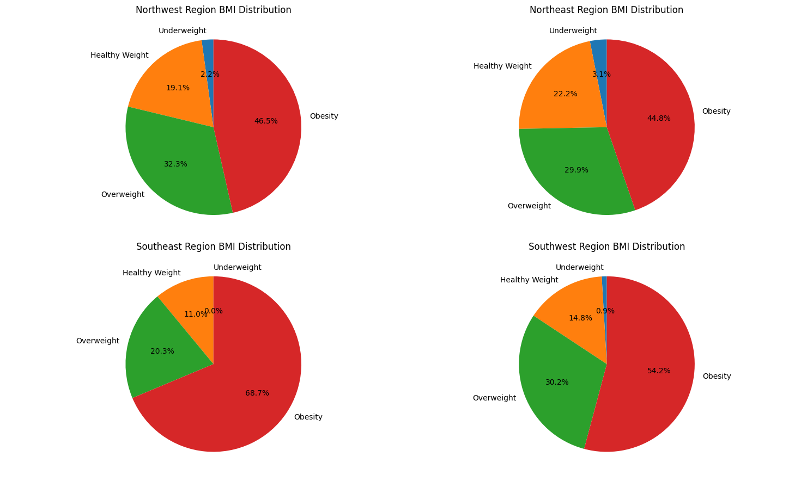
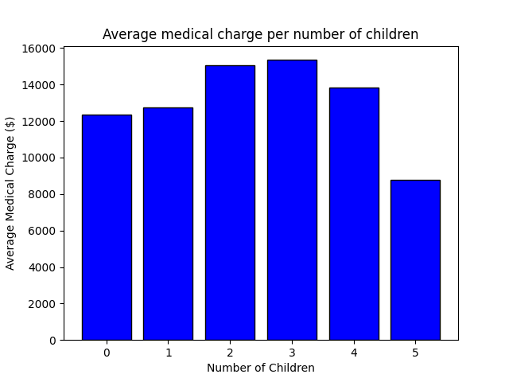

Codecademy Portfolio Project · June 2024
An end-to-end analysis of a US medical insurance dataset using custom Python functions and data visualization. The dataset was sourced from Codecademy and Kaggle, containing 1,338 entries with no missing values.
The project investigates how patient attributes — smoking status, BMI, age, number of children, sex, and region — correlate with annual medical charges, surfacing patterns relevant to healthcare, finance, and policy.
Calculated average charges for smokers and non-smokers separately, then computed the absolute and percentage difference. Smokers showed significantly higher average annual charges.
Grouped patients by age and computed average charges per age group. Revealed a consistent upward trend in charges with increasing age.
Plotted BMI against charges segmented by US region (northeast, northwest, southeast, southwest), identifying how obesity and geography interact to affect cost.
Calculated average charges grouped by number of dependents. Found a non-linear relationship — charges do not rise uniformly with more children.
Smokers incur dramatically higher charges on average — the single strongest predictor of cost in the dataset.
Charges increase consistently with age, reflecting higher healthcare utilization as patients grow older.
Higher BMI correlates with higher charges, particularly in southeastern regions where obesity rates tend to be elevated.
The relationship between number of dependents and charges is non-linear — families with 3 children do not always pay more than those with 1.



Hover to View Enlarged Graphs
Future work could include multi-variable analysis — combining smoking, BMI, and region simultaneously — or applying regression models to predict charges. These insights have applications across multiple sectors.
Identify high-risk patient cohorts based on smoking status, BMI, and age for preventive care targeting.
Build cost estimation models that help insurers price premiums more accurately based on patient attributes.
Track regional charge trends to inform resource allocation and public health spending decisions.